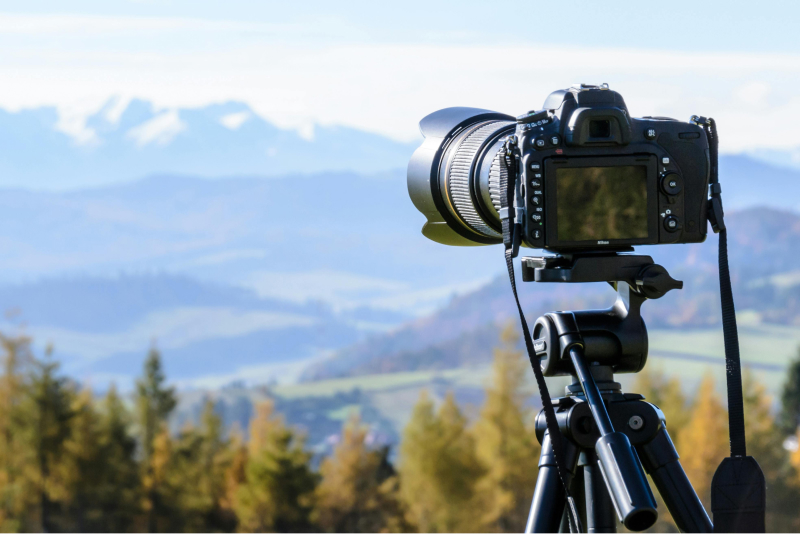
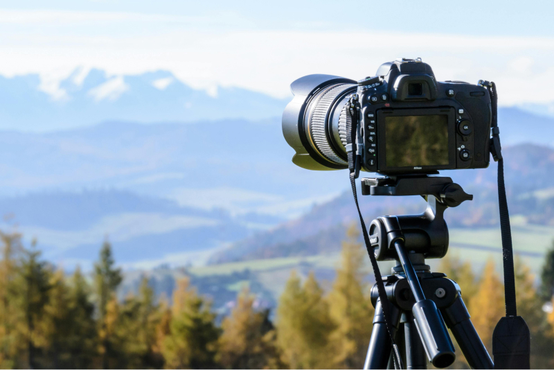
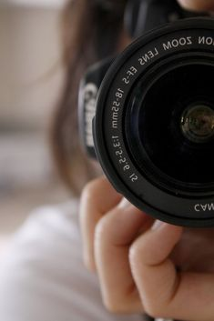
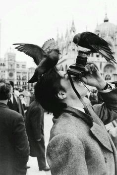
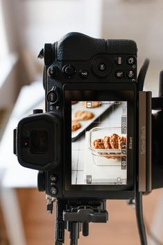
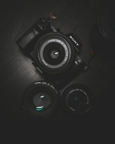

More information
If you are just starting out in photography and you don't know where to begin, or perhaps you have been taking pictures with your camera for a while and want to improve your shooting skills, you’ve come to the right place. The material compiled in this article will not only help you in building up your photography knowledge, but also assist in advancing you to the next level. On this page, you will find the most valuable articles and techniques we have written to help you grow as a photographer, from basic photography articles for beginners all the way to more advanced techniques and tutorials.



